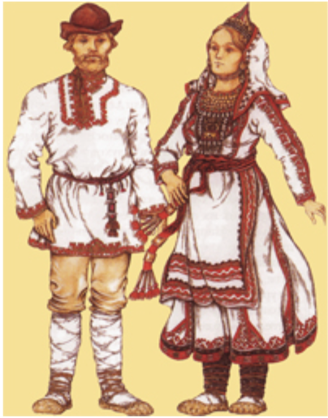

Мари - финно-угорский народ, проживающий преимущественно в Республике Марий Эл на Волге, известный своей уникальной культурой, тесно связанной с природой и сельским хозяйством.
Мари - финно-угорский народ, проживающий преимущественно в Республике Марий Эл на Волге, известный своей уникальной культурой, тесно связанной с природой и сельским хозяйством.
Марийский язык, который относится к финно-угорской языковой семье, и разделяется на несколько диалектов. Язык характеризуется гармонией гласных, агглютинативной структурой и богатым фонетическим составом, включая редкие гласные и согласные звуки.
Традиционная одежда марийцев включает яркие и украшенные элементы, такие как вышитые рубахи и платья, часто с использованием ярких цветов и узоров, символизирующих природу и местные традиции.
Быт марийцев традиционно связан с земледелием и лесным хозяйством, с уклоном в самообеспечение и использованием природных ресурсов, включая леса и реки.
Марийцы сохранили элементы древнего язычества, включая поклонение природным духам и святыням, хотя многие также исповедуют православие. Духовная жизнь тесно связана с природой и сезонными циклами.
Марийская литература насчитывает множество народных сказаний, легенд и эпических поэм, отражающих их историю, культуру и верования, а также современные литературные произведения, продолжающие эти традиции.
|  |